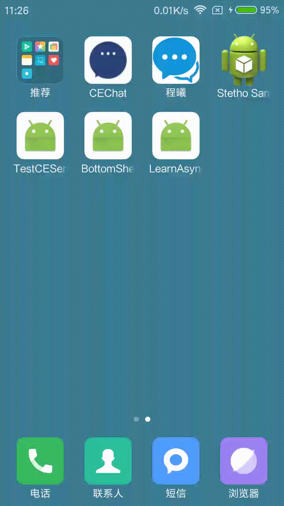

你会使用AsyncTask吗？
前言
AsyncTask 的本身其实是对 Handler 机制的封装，目的是让异步操作的实现变得简单，更多的关注业务实现。
基本步骤
- 创建一个继承自 AsyncTask 的类。
- 确定
AsyncTask<Params（参数）, Progress（进度）, Result（结果）> 泛型的三个参数类型。
- 重写以下方法：
1
2
3
4
| protected void onPreExecute()
protected abstract Result doInBackground(Params... params);
protected void onPostExecute(Result result)
protected void onProgressUpdate(Progress... values)
|
注意：
- onPreExecute 方法会在execute方法调用前调用，运行在UI线程，可以做进度框的展示等 ；
- doInBackground方法的参数是可选参数，类型由创建类时决定，并且该方法是执行在子线程中的，可以做一些耗时操作；
- onPostExecute 方法的参数也是创建类时决定，可以是String、Bitmap类型等，运行在UI线程中，根据返回的result，这里的result的类型就是doInBackground 的返回值类型，因此可以更新UI ；
- onProgressUpdate 方法的参数是可选参数，可以展示任务处理的进度，不过需要通过在doInBackground 中根据下载内容占总下载内容的比例主动调用publishProgress 方法，才会回调onProgressUpdate 方法。
这里我取的是知乎日报的获取最近消息的api，感谢大神的共享，先上api文档链接：知乎日报
实例化该异步任务类，并调用AsyncTask execute(Params… params) 方法启动任务。
在本项目中，使用了两种常用的返回类型的异步任务类，分别完成下载api返回的String类型的json数据并解析成集合数据和Bitmap类型的图片的任务，主要代码如下：
第一种类型
1
2
3
4
5
6
7
8
9
10
11
12
13
14
| private static final String URL = "http://news-at.zhihu.com/api/4/news/latest";
private class StoryAsyncTask extends AsyncTask<String, Viod, List<Story.StoriesBean>> {
@Override
protected List<Story.StoriesBean> doInBackground(String... params) {
return getJsonString(params[0]);
}
@Override
protected void onPostExecute(List<Story.StoriesBean> stories) {
mAdapter.addListData(stories);
mRefreshLayout.setRefreshing(false);
}
}
new StoryAsyncTask().execute(URL);
|
第二种类型
1
2
3
4
5
6
7
8
9
10
11
12
13
14
15
16
17
18
19
20
21
22
23
24
25
| private class ImgLoaderAsyncTask extends AsyncTask<String, Void, Bitmap> {
private ImageView mImageView;
private String mUrl;
public ImgLoaderAsyncTask(ImageView imageView, String url) {
mImageView = imageView;
mUrl = url;
}
@Override
protected Bitmap doInBackground(String... params) {
String url = params[0];
Bitmap bitmap = getBitmapFromUrl(url);
if (bitmap != null) {
addBitmapToCache(url, bitmap);
}
return bitmap;
}
@Override
protected void onPostExecute(Bitmap bitmap) {
super.onPostExecute(bitmap);
if (mImageView.getTag().equals(mUrl)) {
mImageView.setImageBitmap(bitmap);
}
}
}
|
相关
关于cache的部分，请点击如何利用LruCache进行数据缓存进行查看。

另外附上AsyncTask异步任务之源码解析
If you like my article, you can reward me to support my writing.

wechat

alipay